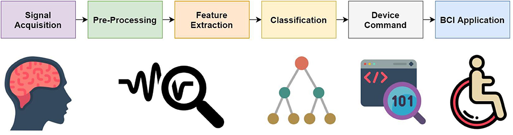
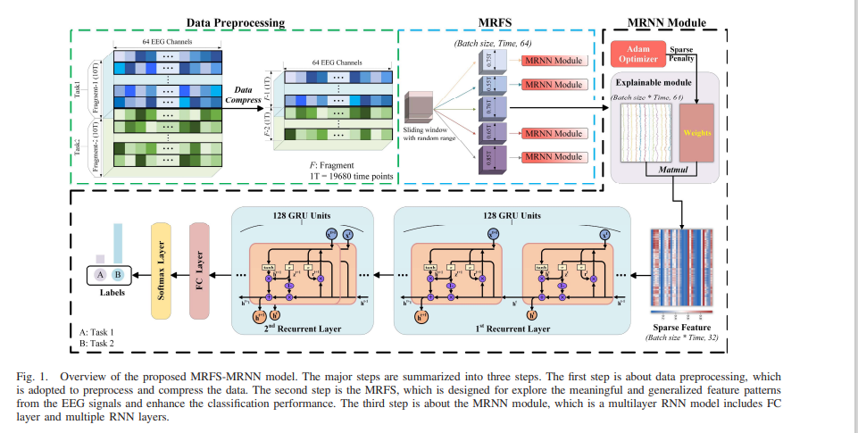

第一周毕设进度
作者： 袁麒龙
发布日期：2023年1月14日
[toc]
一、BCI文献总述
###1.1 文献信息
文章题目：《Current Status, Challenges, and Possible Solutions of EEG-Based Brain-Computer Interface: A Comprehensive Review》
期刊：《Frontiers in Neurorobotics》
链接:https://doi.org/10.3389/fnbot.2020.00025
1.2 文献内容
每个BCI系统基本上由五个组成部分组成：大脑信号获取，预处理，特征提取，分类和翻译成命令。如下图所示：

BCI可分为侵入性和非侵入性。对于侵入性BCI，通常需要将微电极阵列植入皮质内。相反，如果大脑信号是通过放置在头皮上的传感器获得的，则称为非侵入性BCI。经常使用的非侵入性方式包括脑电图、功能磁共振成像等。
1.2.1 常用的BCI范式
1.运动想象BCI（Motor Imagery，MI-BCI）
基于运动想象的系统主要是将运动想象激发大脑运动皮层脑电节律变化的脑电信号作为输入，通过信号处理部分判断运动想象种类，然后由计算机将运动想象种类翻译成控制命令，最终可以实现人脑与外部设备的通信及控制功能
2.SSVEP（Steady-state visual evoked potentials：稳态视觉诱发电位）
稳态诱发电位由持续波动的刺激（重复频率大于 5Hz）产生。例如，考虑一个能够解码二选一问题的系统。可以用视觉刺激来表示这两个选项（如，屏幕上的按键或者发光二极管 LED），每个视觉刺激以不同的频率闪烁。被试需要关注他/她选择的那个按键（如，注视它）。这样可以在大脑的早期视觉区域（枕区）产生与刺激频率相同的 EEG 信号，这一信号称作稳态视觉诱发电位(SSVEP)。
3.P300 BCI刺激范式
P300是最常用来建立脑机接口的ERP，它是一种大脑对“新奇”事件的响应信号，一般出现在事件发生后300-600ms左右。P300与认知功能密切相关，因此多种人体感觉通道(如视觉通道、听觉通道和触觉通道)输入的事件均可诱发P300信号。
1.2.2 预处理
预处理主要作用是滤除信号中的非脑电数据，即伪影。常用的方法有去趋势化、独立成分分析（独立分量分析）、带通滤波去伪迹、陷波滤波、盲源分析等。
1.2.3 特征提取
在噪声消除阶段之后，通过不同的特征提取技术提取EEG中最具辨别力和非冗余的信息。时域、频域、时频域和空间域是基于EEG的BCI中流行的特征提取技术类型。
典型的基于时域的特征提取方法，即自回归（AR）建模，是序列的当前观测值与一个或多个早期观测值的线性回归。
频域分析也被用于从不同的基于EEG的BCI中提取特征。在基于频域的技术中，有一些使用快速傅里叶变换（FFT）的技术等。
1.2.4 分类
已发表的基于EEG的BCI文献中已经提出了许多分类算法，例如，支持向量机（SVM），神经网络（NN），线性判别分析（LDA），贝叶斯分类器，k-最近邻（k-NN），以及深度学习及其变形。
1.2.5 BCI应用
BCI 轮椅控制，BCI光标控制，BCI拼写，BCI情绪识别等。
二、BCI学习资源
2.1 BCI2000
BCI2000目前是和BCILAB使用脑机接口软件的比较多的辅助软件之一。基本上支持大多数的脑电或者其他设备的数据格式。
2.2 网络教程
网址：https://sccn.ucsd.edu/wiki/Introduction_To_Modern_Brain-Computer_Interface_Design
2.3 开源代码
MetaBCI is an open-source platform for non-invasive brain computer interface, which has 3 main parts:
1.brainda: for importing dataset, pre-processing EEG data and implementing EEG decoding algorithms.
2.brainflow: a high speed EEG online data processing framework.
3.brainstim: a simple and efficient BCI experiment paradigms design module.
网址：https://github.com/TBC-TJU/MetaBCI
三、MRFS-MRNN
3.1 论文简介
文章题目《An Explainable and Generalizable Recurrent Neural Network Approach for Differentiating Human Brain States on EEG Dataset》
期刊：《IEEE TRANSACTIONS ON NEURAL NETWORKS AND LEARNING SYSTEMS》 CCF-B
3.2 文章思想
文章提出了一种基于多随机片段搜索的多层递归神经网络（MRFS-MRNN）。具体来说，提出了一个可解释的MRNN模块来捕获EEG时间序列中保留的时间依赖性。此外，设计了MRFS模块，从整个脑电信号时间过程中切割多个随机片段，以提高大脑状态区分能力的有效性。MRFS-MRNN连接起来，有效地克服了巨大的变异性和过拟合问题。实验结果表明，所提出的MRFS-MRNN模型不仅具有优异的分化性能，而且具有良好的解释和泛化能力。在个人层面上，二元分类的分类准确率高达95.18%，四类分类的分类准确率高达89.19%。实验结果表明，所提方法在相同基础数据上优于其他现有（SOTA）模型，提高了解释和泛化能力。

这篇文章的详细内容后面会细聊！